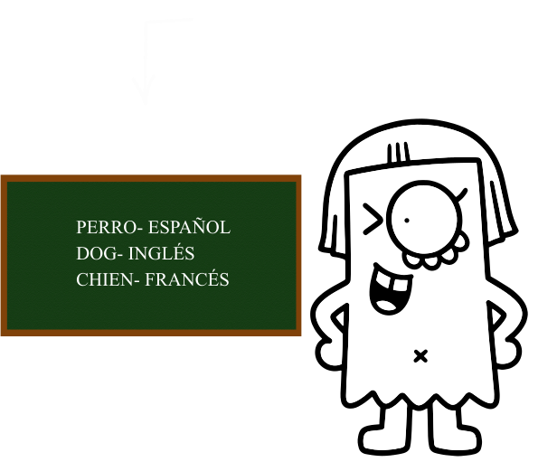
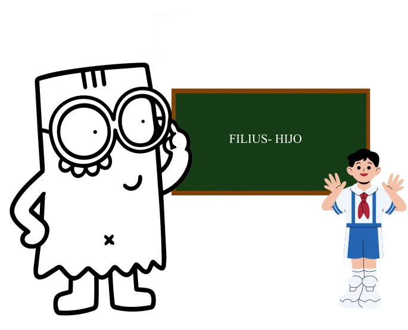
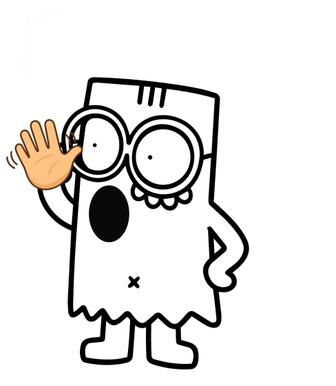
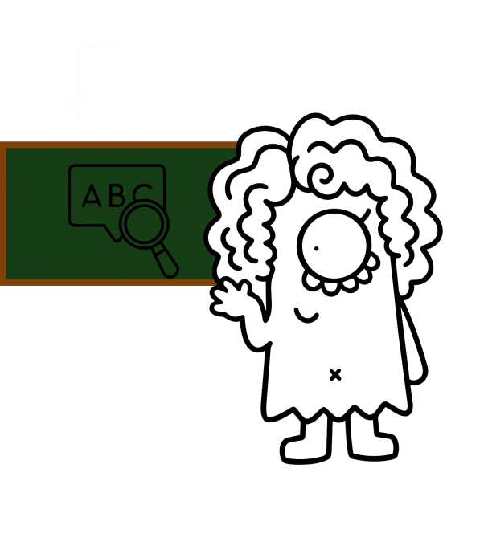
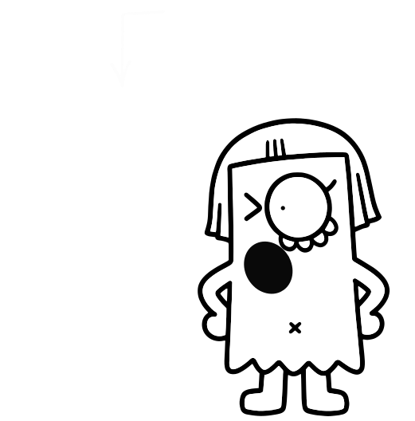
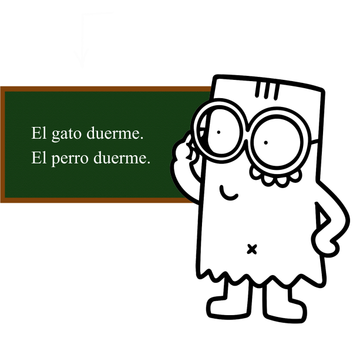
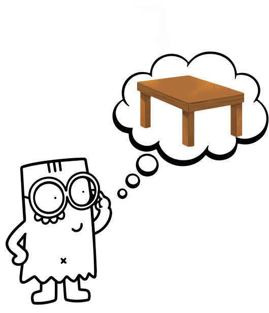
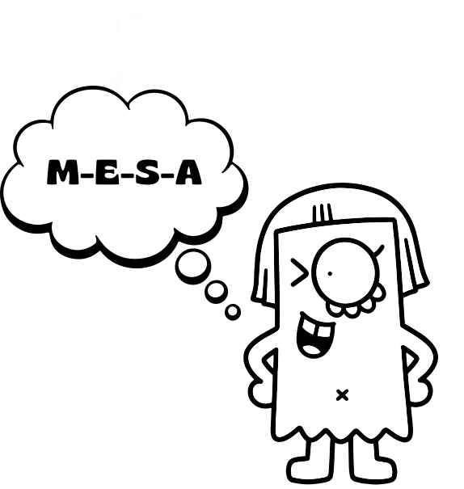
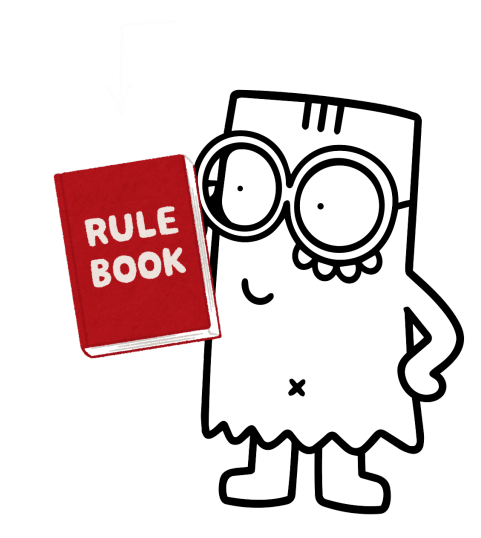

Conceptos de Ferdinand de Saussure

Definición:Significa que no existe una relación natural entre el significante y el significado.
Ejemplo:A un animal cuadrúpedo que ladra se le llama "perro" en español, "dog" en inglés y "chien" en francés ninguna de estas palabras tiene un vínculo físico o directo con el animal.

Definición:Estudia la lengua a través del tiempo, observando sus cambios y evolución histórica.
Ejemplo:Estudiar cómo la palabra latina "filius" evolucionó a lo largo de los siglos hasta convertirse en "hijo" en el español actual.

Definición:La ejecución individual, concreta y voluntaria del sistema de la lengua por parte de un hablante en un momento dado.
Ejemplo:La forma exacta, con su tono de voz, pronunciación y ritmo, en la que tú dices la frase "Hola, ¿cómo estás?" en este instante.

Definición:Es el sistema social de signos y reglas compartido por una comunidad de hablantes.
Ejemplo:El idioma español con su vocabulario y sus reglas de gramática que compartimos todos los hispanohablantes.

Definición:Característica del significante de desenvolverse exclusivamente en la dimensión del tiempo. Los sonidos o letras se emiten uno tras otro en una secuencia lineal sin poder superponerse.
Ejemplo:Para pronunciar la palabra "sol", debes decir primero la /s/, luego la /o/ y finalmente la /l/; no se pueden emitir todos los sonidos al mismo tiempo.

Definición:Relaciones de sustitución en "ausencia" (in absentia) entre elementos lingüísticos que comparten la misma categoría o función y que podrían ocupar la misma posición en una oración.
Ejemplo:En la oración "El gato duerme", puedes sustituir "gato" por "perro", "niño" o "león". Esos términos forman un paradigma.

Definición:Relaciones de combinación en "presencia" (in praesentia) que se establecen entre los signos que se alinean uno tras otro formando una cadena de palabras (sintagma).
Ejemplo:La secuencia exacta de palabras "El perro negro corre rápido", donde la posición y concordancia de cada palabra depende de las otras en la frase.

Definición:El concepto, la idea o la representación mental a la que remite un signo lingüístico.
Ejemplo:La representación mental o idea de un mueble compuesto por una superficie plana sostenida por patas que sirve para comer o escribir.

Definición:La imagen acústica o la representación mental de la forma sonora (o gráfica) de la palabra.
Ejemplo:La huella psíquica de la secuencia de sonidos /m-e-s-a/ al escucharla o pensarla.

Definición:Unidad psíquica indisoluble formada por la unión de una imagen acústica (significante) y un concepto (significado).
Ejemplo:La unión indivisible entre la idea de "árbol" (significado) y la representación sonora /á-r-b-o-l/ (significante).

Definición:Estado o enfoque de la lengua analizado en un momento determinado del tiempo, considerando el sistema como un todo coherente sin importar su historia previa.
Ejemplo:Analizar las reglas de la gramática y el vocabulario del español actual tal como se habla en el año 2026.

Definición:La propiedad de un signo que queda determinada no por su contenido intrínseco, sino por sus diferencias y relaciones con los demás signos dentro del mismo sistema.
Ejemplo:En español, la palabra "pez" (animal vivo en el agua) se diferencia de "pescado" (animal capturado). Su valor radica en la distinción que existe frente al otro término del sistema.